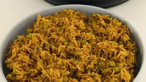

Pilau Recipe

The first tweak I’ve made is, instead of using pre-mixed pilau masala, I prefer to make my own mix using the spices I already have on my spice rack. A masala is basically a blend of spices and after a little research on what goes into a typical pilau masala, I realized that I have all those spices on my rack. Additionally, by making my own mix, I was able to add and reduce the different spices accordingly to what I prefer. For example, cumin is a strong spice that really overshadows the other spices, so I reduced the amount in my pilau mix and added the amount of coriander because I love its subtle taste.
Ingredients
- 2 tablespoons of coriander
- 1 tablespoon of cumin
- 1/2 tablespoon of cloves
- 1/2 teaspoon of turmeric
- 1 tablespoon of cardamom
- 1 tablespoon of cinnamon
- 1/2 tablespoon of black pepper
- 2 bay-leaves
Steps
- Start by frying the chopped onions in the vegetable oil until the onions are soft and almost browned.
- Add in the ginger and garlic paste and let this cook for 2 minutes until they’re fragrant.
- Add the cubed beef in, season generously with salt and cover.
- Allow the meat to cook until it dries up. The meat with let out its own juices and cook in them, and it will eventually dry out and begin to brown.
- Once the meat browns and caramelizes, add in the 2 tablespoons of Pilau masala mix and bay leaves.
- Let the spices toast for a minute to let them bring out their best flavors.
- Add in the washed rice and stir the rice into the spices until the rice gets mixed into the spices.
- Finally, add in the 4 cups of water and let this begin to boil while stirring to make sure everything is well mixed.
- Once it begins boiling, cover the sufuria with foil tightly and reduce the heat to the lowest heat.
The rice will simmer on low heat for about 15-20 minutes until it dries out.
Quick tip: Listen to the rice closely after the 10 minute mark. Literally listen for the crackling sound at the bottom of the sufuria to determine if the rice is dry.
As much as following a recipe to the letter is great and well advised, learn to use your different senses in the kitchen because times may vary. Depending on the type of rice, amount of heat, amount of rice and type of sufuria, the cooking time may vary
- Once the rice is dry, remove the foil and fluff the rice using a fork. Remove and discard the bay leaves.
- Use the fork to mix up the rice with any of the beef and onions that might have floated and settled at the top.
- Serve hot with some fresh kachumbari(salsa)